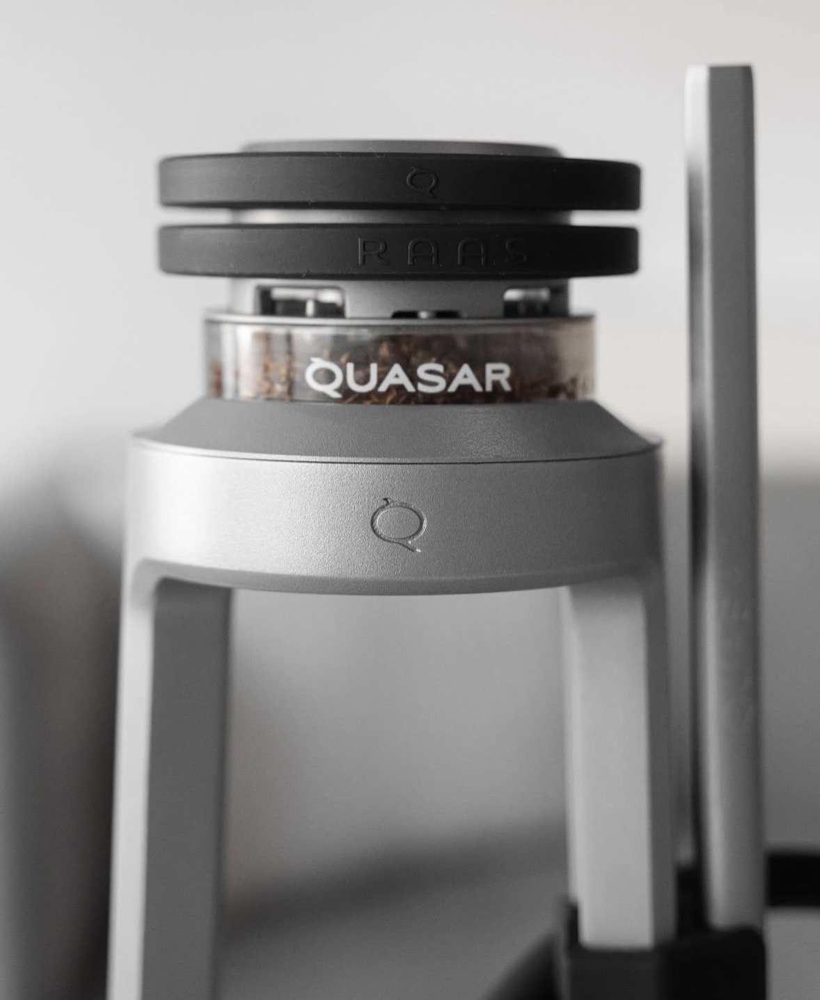
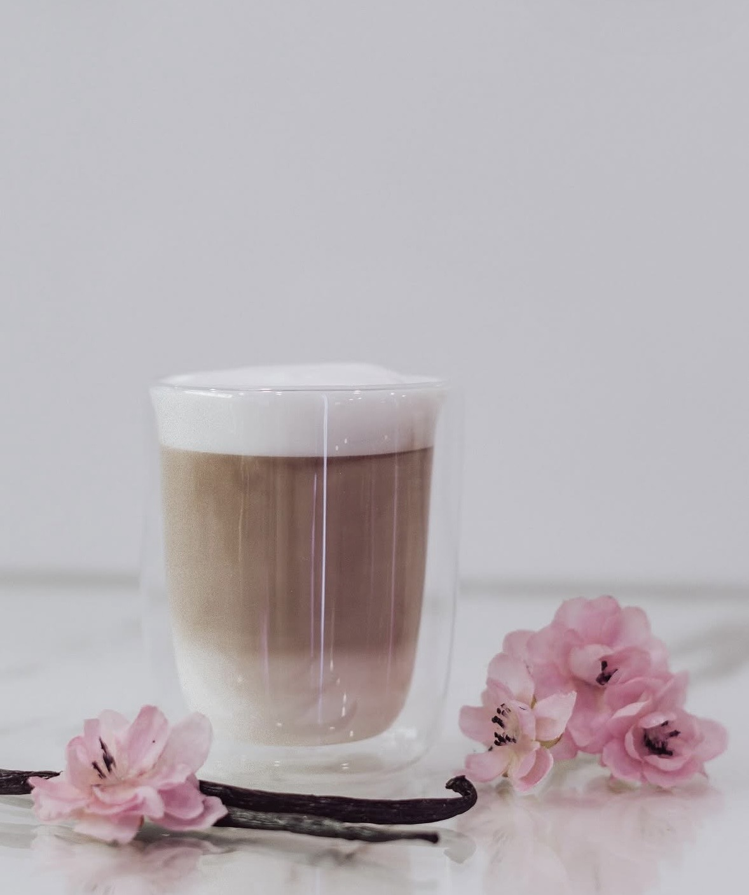
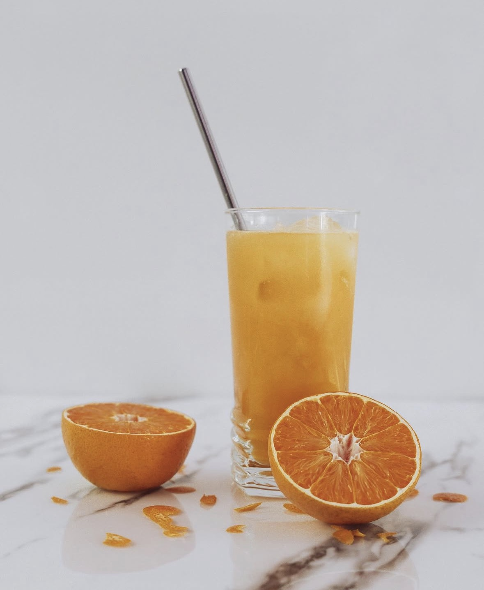
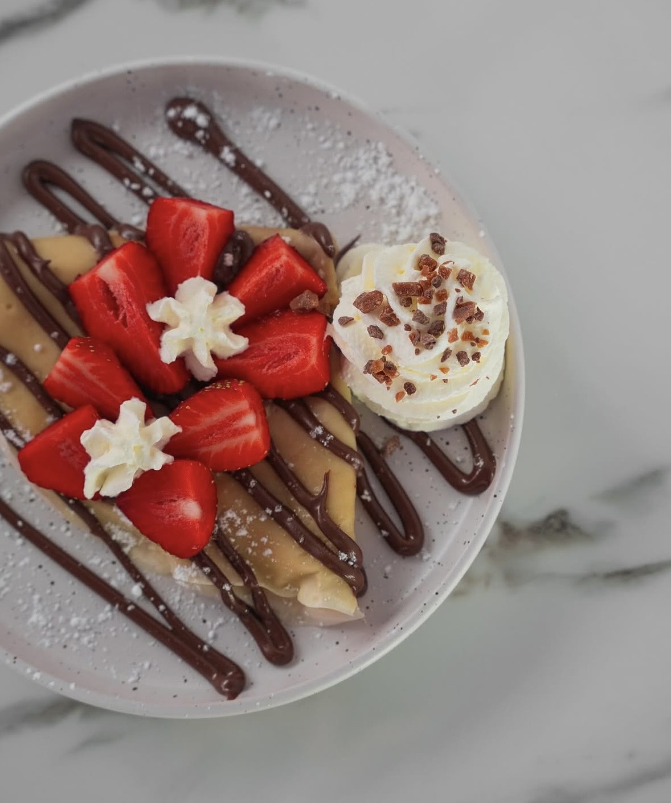

Nos Narguilés

Classique12 €
NaturelBrohood ou Kaloud15 €
Premium Quasar20 €
Prestige Quasar+ une boisson au choix offerte25 €
La carte
Drinks & Food

Boissons chaudes

Nos Softs

Nos Sucrés

Glacé
Le smoothie du moment : Maracuja, Ananas, Banane, Yaourt — 5 €